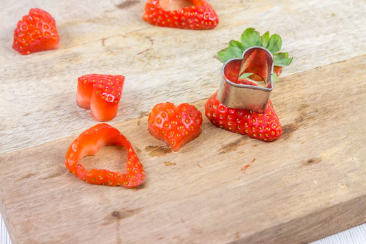

Fondant au chocolat

Aujourd’hui je vous retrouve avec une nouvelle recette absolument terrible, fondante, chocolatée et méga gourmande. Je vous donne ici la recette du fondant au chocolat accompagné de quelques petites fraises pour la Saint-Valentin.
Oui je sais méga honte à moi j’ai acheté des fraises en plein mois de février pour accompagner mon fondant au chocolat!!!! Mon dieu que j’ai honte (en plus ce n’est pas comme si c’était les meilleures fraises du siècle jamais mangées^^). Bref si vous me suivez depuis le début vous n’êtes pas sans savoir que moi et les fraises (et le chocolat) c’est une grande (très grande) histoire amour alors il faut me pardonner. J’ai beau râler depuis des semaines à chaque fois que je vois les gens acheter des fraises au supermarché (sans doute car je suis frustrée de ne pas en acheter^^) mais j’ai tout de même craqué!! Pour me consoler je me dis qu’après tout c’était pour la bonne cause et que ce fondant au chocolat n’aurait pas été le même sans ces petits cœurs de fraises. Je suis sûre que si vous comptez faire la recette vous me comprendrez assez facilement. En tout cas pour parler de ce fondant je peux vous assurer qu’il est carrément super fondant limite coulant à la base et avec la petite touche de confiture et les fraises c’est divin! Ce fondant au chocolat est délicieux tel quel, il n’a besoin de rien de plus et il se suffit largement à lui même mais pour ceux qui aimeraient l’aromatiser vous pouvez tout à fait ajouter à la pâte du rhum, du grand marnier, de l’armagnac pour ceux qui aiment associer alcool et pâtisserie mais aussi du piment d’Espelette (je le fais très souvent avec 3-4 pincées) ou plus tout simplement de l’extrait de vanille. Étant donné que c’est un fondant pensez à utiliser un moule amovible et à laisser le gâteau refroidir avant de le démouler afin d’éviter qu’il ne se défasse à la sortie du four. Je vous laisse découvrir la recette et même si je n’aime pas spécialement cette fête car selon moi il faut se dire je t’aime un peu tous les jours, j’en profite pour souhaiter à tous les amoureux une très joyeuse Saint-Valentin en espérant qu’elle fut gourmande! <3 <3
Ingrédients
- Chocolat noir - 200g
- Poudre de cacao à 70% - 40g
- Cassonnade - 70g
- Vergeoise blonde - 30g
- Oeufs - 5
- Beurre doux - 60g
- Beurre salé - 60g
- Extrait de vanille - 2 càc
- Farine - 30g
- Confiture (de framboises pour moi) - 2 càs (environ)
- Fraises - environ 400g (tout dépendra de la taille de vos fraises)
- Moule à manquer de 18cm - 1
- Emporte pièce en forme de coeur - 1
- Saladier - 1
- Grande casserole - 1
- Spatule - 1
- Fouet - 1
Instructions
- Préparer tous vos ingrédients
- Préchauffer le four à 180°
- Dans un petit bol, mélanger la cassonade, la vergeoise, la farine et le cacao en poudre Si vous n'avez pas de vergeoise et que vous avez une envie pressante de faire ce gâteau ajouter donc 100g de cassonade
- Casser le chocolat en carrés et couper le beurre doux et le beurre salé en morceaux
- Dans une grande casserole, faire fondre à feu moyen les deux beurres et le chocolat
- Remuer régulièrement
- Vous allez obtenir un chocolat lisse et brillant (il va falloir résister à ne pas trop lécher la cuillère)
- Hors du feu, continuer de remuer et ajouter le mélange contenant la cassonade,la vergeoise, la farine et le cacao
- Mélanger jusqu’à obtenir un mélange homogène
- Casser les œufs un à un et incorporez-les au mélange
- Fouetter le mélange jusqu’à ce que les œufs soient bien incorporés
- Mettre du papier sulfurisé au fond de votre moule amovible
- Beurrer correctement les côtés ainsi que le fond (même sur le papier sulfurisé)
- Verser la pâte à gâteau dans le moule
- Enfourner pendant 28 minutes (entre25 et 30 selon votre four) à 150°
- A la sortie du four ne démoulez pas votre gâteau. Laissez-le refroidir
- Une fois que votre fondant a tiédi vous pouvez enfin le démouler
- Commencer par défaire les bords du moule à manquer et déposez ensuite le fondant délicatement sur une assiette
- Tartiner le dessus de votre fondant au chocolat de confiture (pour moi confiture de framboises mais fraises, fruits rouges etc. feront aussi très bien l'affaire)
- Découper des petits cœurs dans des fraises à l'aide d'un emporte-pièce et déposez-les sur le gâteau
- Ici j'ai saupoudré de paillettes alimentaires et de copeaux de chocolat libre à vous de faire ce que vous voulez!
- Placez le gâteau au frais jusqu’au moment de le servir
- Bonne dégustation!! 😉

Les tips de la communauté
Recette de fondant chocolat très appréciée pour son aspect Valentine et sa présentation élégante. Le coeur chocolat fondant couplé aux fraises fraîches en cœur séduit les convives. Pratique pour les repas entre amis.
Astuces
- Parfait pour un repas spécial ou Saint-Valentin
- La présentation avec fraises en cœur ajoute une touche romantique
- Recette accessile même pour les cuisiniers novices selon les commentaires
- Les fraises fraîches donnent une touche de printemps appréciée